AX CAMPUS 3회차 · DB 설계와 웹앱
한빛수학
수강 신청과 출결
학부모·학생 웹 · 원장·강사 어드민 · 공용 백엔드 · 문의 챗봇
정주애 · 2026.11.06
← → 이동 · T 목차 · F 전체 화면
코어 웹
academy-enrollment-web.vercel.app
Next.js · Vercel · 학부모·학생
어드민
academy-enrollment-admin.vercel.app
Next.js · Vercel · 원장·강사
백엔드
academy-enrollment-backend.onrender.com
NestJS · Render · PostgreSQL hw2
QR을 찍으면 바로 열려요 ↗
CONTENTS
목차
항목을 누르면 그 장으로 이동해요
01 · 고객
한빛수학을 고른 이유
헬스장 힘찬짐공유 오피스 모퉁이반려동물 호텔 꼬리별수학학원 한빛수학누리상사 법인차량
나중에 직접 쓸 수 있고,
운영 구조를 이해하기 쉬운 교육 분야
- 앞으로 가장 현실적인 진로가 강의·교육
- 과외·강의를 하게 되면 직접 쓸 수 있는 서비스
- 익숙한 학원 운영 방식 — 업무 파악보다 설계에 집중
01 · 고객
고객 요구사항 — 구현한 것
번호는 노션 과제의 요구사항 번호
공통·A~C는 필수, D는 골라서 4개
공통·A~C는 필수, D는 골라서 4개
공통1~8
1이메일 가입·로그인2비밀번호 해시 저장3로그인해야 이용4자기 것만 보기5직원은 원장이 생성6원장·강사 역할7사용 중지8비밀번호 리셋
A기본 정보
A1학생·보호자 연락처A2형제 가족A3강사A4반
B수강과 규칙
B5수강 기록B6같은 반 중복 금지B7정원B8학년 일치B9강사 시간 겹침B10출결B11다른 반 보강B12월 납부
C현황
C13이번 달 출석률C14보강 필요 학생C15미납·형제 할인
D골라서 더하기
D16시험 성적D17강사 주간 시간표D19학부모 요약D20환불 계산D18반별 출석률 비교 · 안 고름
선택규정 챗봇
5-1규정 문서·지식 (안내 10개)5-2백엔드에서 Dify 부르기 (문의 챗봇)5-3검색 실험 · 이번엔 안 함
기타요구사항 밖, 더 한 것
+휴강·보충 수업+전화 신청 등록+상담·메모 타임라인+학적 이력·학년 보정+변경 기록+회원 탈퇴
01 · 고객에게 다시 물어본 것
① 사람과 수강
답은 내가 원장 입장이 되어 정함 · docs/decisions.md
| 질문 | 답 |
|---|---|
| 실장 역할이 필요한가? | 필요 없음 — 원장(관리자)과 강사(일반 직원)만 |
| 학생도 계정이 있나? | 있음 — 보기 전용, 원장이 학생 등록 때 함께 생성 |
| 보호자 이메일은 필수인가? | 선택 — 전화번호만 있으면 계정 없이 연락처로 저장 |
| 학년은 저장하나? | 저장 안 함 — 입학일자로 계산해 3월 진급 작업 불필요 |
| 신청하면 바로 확정인가? | 아님 — 학부모 신청 → 원장 승인, 규칙은 두 번 검사 |
| 정원은 늘 8명인가? | 반마다 다름 — 기본 8명, 원장이 수정 |
| 전화로 신청하면? | 원장이 어드민에서 대신 등록 — 바로 수강중 |
| 같은 시간에 다른 반을 다닐 수 있나? | 불가 — 학생 시간 겹침 검사 |
01 · 고객에게 다시 물어본 것
② 출결과 돈
| 질문 | 답 |
|---|---|
| 보강은 시스템이 막나? | 막음 — 그 달 결석 2회 이상 · 같은 학년 반 · 그날 정원 안, 원장 확정 |
| 휴강하면? | 같은 반 보충 수업 추가 — 학생 개인의 보강과 별도 |
| 지각한 시각도 남기나? | 도착 시각 기록 — 지각 시간(분)은 계산 |
| 형제 할인 "둘째"의 기준은? | 등록순 — 그 달 다니는 형제 중 두 번째부터 10% |
| 환불 기준은? | 그 달 실제 수업 수 기준 — 결석은 지난 수업으로 세고 휴강은 제외 |
| 회원 탈퇴가 있나? | 있음 — 다니는 반·환불 요청·이번 달 미납이 없을 때, 기록은 보관 |
| 삭제는 어떻게 하나? | soft delete — 지운 시각만 기록, 되살리기 가능 |
02 · 시스템
시스템 구조 — 앱 둘, 백엔드 하나
코어 웹
Next.js · Vercel
학부모: 자녀 요약·수강 신청·보강·결제·환불 신청
학생: 내 스케줄·출석·성적 보기
학생: 내 스케줄·출석·성적 보기
어드민
Next.js · Vercel
원장: 승인·학생/반/강사·회계·직원 계정
강사: 담당 반 출결·성적
강사: 담당 반 출결·성적
백엔드 하나
NestJS · TypeORM · Render
JWT (사용자, 역할)역할 가드업무 규칙 검사변경 기록
코어 웹은 학부모·학생만,
어드민은 원장·강사만 로그인
어드민은 원장·강사만 로그인
PostgreSQL
Render · 스키마 hw2
20테이블 · UQ·CHECK 제약
Dify
chat-messages · 스트리밍
학원 안내 지식으로 문의 답변
API 키는 백엔드에만
API 키는 백엔드에만
HTTPS + JWT
HTTPS + JWT
TypeORM
API 키
02 · DB 설계 · ERD
ERD — 20테이블, 묶음 5개
모든 테이블 공통 칼럼 5개
created_at · updated_at · created_by · updated_by · deleted_at
created_at · updated_at · created_by · updated_by · deleted_at
02 · DB 설계 · ERD
① 계정 하나 → 역할별 정보
화살표 방향: 하나(1) → 여러 개(N)
02 · DB 설계 · ERD
② 반 → 실제 수업 → 출결 → 보강
휴강 → 보충: class_session끼리 연결
02 · 설계 이유 ① 테이블 분리
회원은 한 테이블에서
계정은 app_user 하나, 사람 정보는 역할별 profile
- 모든 회원은 app_user 한 테이블, 역할은 role(학부모·학생·강사·원장)
- 역할별 정보는 parent_profile · student · teacher에 따로, FK로 연결
- 로그인·비밀번호 해시·임시 비밀번호·사용 중지는 모든 역할이 같음 — 한 곳에서 처리, 이메일 중복도 한 칼럼에서 차단
- 자주 안 바뀌는 계정 정보와 계속 쌓이는 정보(메모·성적·학적 이력)는 테이블을 나눔
02 · 설계 이유 ① 테이블 분리
수업은 "규칙"과 "실제"를 나눔
출결은 실제로 열린 수업에 붙는다
class
반
중2 심화A · 정원 8
class_schedule
정규 요일
매주 화·목 19:00~21:00
class_session
실제 수업
11/4(화) 정상 · 휴강 · 보충
attendance
학생별 출결
출석 · 지각 · 결석 → 결석이면 보강
- 예정과 실제가 다를 수 있음 — 휴강하면 같은 반에 보충 수업 추가
- 출결·보강·환불 횟수는 모두 실제 수업 날짜 기준
- 요일을 "화,목" 글자 한 칸에 넣으면 강사 시간 겹침 검사 불가
02 · 설계 이유 ① 테이블 분리
기록과 이력은 쌓기만
백업이 아닌 변경 이력 — 언제·누가·무엇을
| 테이블 | 남기는 것 | 쓰임 |
|---|---|---|
| audit_log | 바뀐 날짜 · 바꾼 사람 · IP · 바뀌기 전과 후 값 | 문제 추적 · 책임 확인 |
| login_history | 로그인 성공·실패 · IP · 브라우저 | 보안 확인 · 이용 내역 |
| chat_log | 챗봇 질문 · 답 · 근거와 점수 · 걸린 시간 | 자주 묻는 질문 분석 · 틀린 답 찾기 · 이용량 파악 · 마케팅 자료 |
수정·삭제 없음
세 테이블 모두 쌓기만 — 공통 칼럼은 created_at만
마지막 로그인은 저장 안 함
login_history의 최근 성공 기록으로 조회 — 로그인마다 계정 행을 고치면 실제 수정 기록이 묻힘
02 · 설계 이유 ① 테이블 분리
자세한 테이블별 이유는 이렇습니다
사람
app_user로그인·해시·사용 중지가 역할마다 같아 계정은 한 테이블
parent_profile전화번호만 있는 보호자도 있어 계정과 분리
student학적 정보는 계정과 분리, 가족(family)에 소속
teacher과목·소개·이력은 강사만 있어 계정과 1:1 분리
family형제를 묶어 할인 순번 계산
학적
school같은 이름 학교를 지역으로 구분, 이름 오타 방지
student_school_history전학·진학 이력이 쌓임 — 학생 한 명에 여러 행
student_grade_adjustment학년은 계산, 유급 같은 예외만 사유와 함께 기록
counsel_note날짜·종류로 찾고 한 건씩 고치는 메모
수업
class반 기본 정보 — 대상 학년·정원·수강료·강사
class_schedule한 반에 요일 여러 개 (주 2회)
class_session실제로 열린 수업 — 휴강·보충 반영
enrollment한 학생이 여러 반 수강, 그만둬도 기록 유지
attendance실제 수업 × 학생마다 출결 하나
makeup결석 한 건 → 다른 반 수업 연결
tuition_payment수강·달마다 한 행, 그때 금액을 영수증처럼 보관
exam_score학생 한 명이 여러 번 보는 시험
기록
audit_log누가·언제·IP·변경 전후 값 (쌓기만)
login_history로그인마다 계정 행을 고치지 않도록 분리
chat_log질문·답·근거로 틀린 답·자주 묻는 질문 분석
02 · 설계 이유 ② 규칙 위치
규칙은 어디서 막나
한 행 안에서 판단되면 DB,
다른 테이블을 보거나 세야 하면 백엔드
다른 테이블을 보거나 세야 하면 백엔드
DB DBeaver로 직접 넣어도 거절
같은 반 중복 수강
부분 UQ(학생, 반) — 한 테이블 안, 동시에 두 번 눌러도 차단출결은 학생·수업당 하나
UQ(수업, 학생) — 한 테이블 안점수 0~100
CHECK — 한 칸 값의 범위낸 금액 = 정가 − 할인
CHECK — 한 행 안 칸끼리 비교이메일 중복
부분 UQ — 계정이 한 테이블이라 역할이 달라도 중복 차단백엔드 웹앱 요청일 때 거절
정원
진행 중 수강 수를 세야 함 — 반 행 잠금으로 동시 승인도 차단
학년 일치
학년은 입학일자로 계산하는 값
강사·학생 시간 겹침
여러 반의 요일·시간을 비교해야 함
보강 자격
그 달 결석 수를 세야 함
권한 · 자기 것만
요청한 사람은 로그인 정보(JWT)로만 확인 가능
02 · 설계 이유 ③ 계산값
저장하지 않고 계산한 값
바뀔 수 있는 값은 계산, 영수증은 저장
계산 원본이 바뀌면 같이 바뀌어야 함
학년
입학일자 + 보정으로 계산 — 매년 3월 일괄 수정은 빠뜨리기 쉬움
출석률
출결을 고치면 바로 반영 (지각 3 = 결석 1)
반 현재 인원
신청·승인·수강종료마다 고치면 어긋나기 쉬움
이번 달 청구액 · 미납
할인·납부를 고치면 바로 반영
형제 순번
형제가 그만두면 순번이 바뀜
저장 나중에 바뀌면 안 되는 값
확정 환불액
enrollment.refund_amount — 이미 돌려준 금액, 나중에 출결을 고쳐도 그대로그 달 정가 · 할인 · 낸 금액
tuition_payment — 수강료가 바뀌어도 그 달 영수증은 그대로03 · 웹앱
주소와 계정 관리
코어 웹 academy-enrollment-web.vercel.app
어드민 academy-enrollment-admin.vercel.app
어드민 academy-enrollment-admin.vercel.app
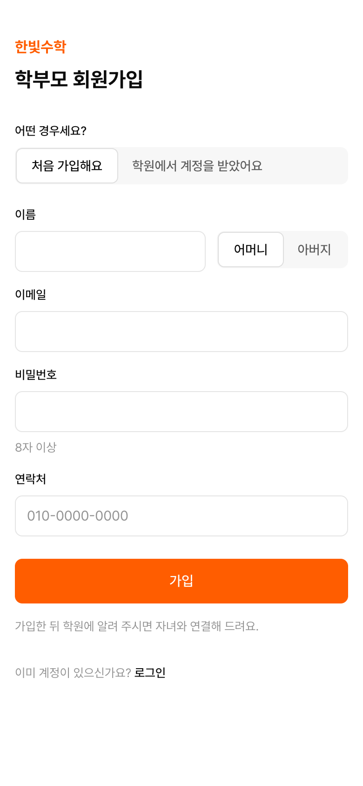
공통1학부모 회원가입
이메일 중복 불가
이메일 중복 불가
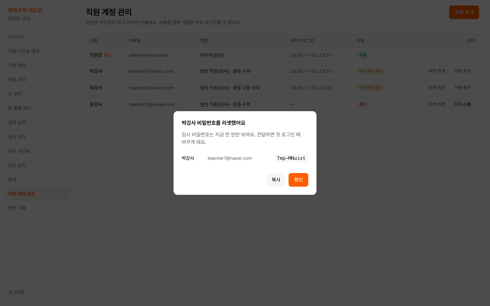
공통8직원 비밀번호 리셋 — 원장만 가능, 임시 비밀번호는 한 번만 표시
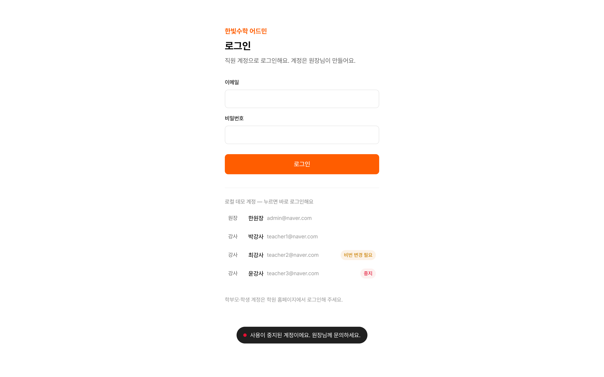
공통7사용 중지 계정 — 로그인 거절
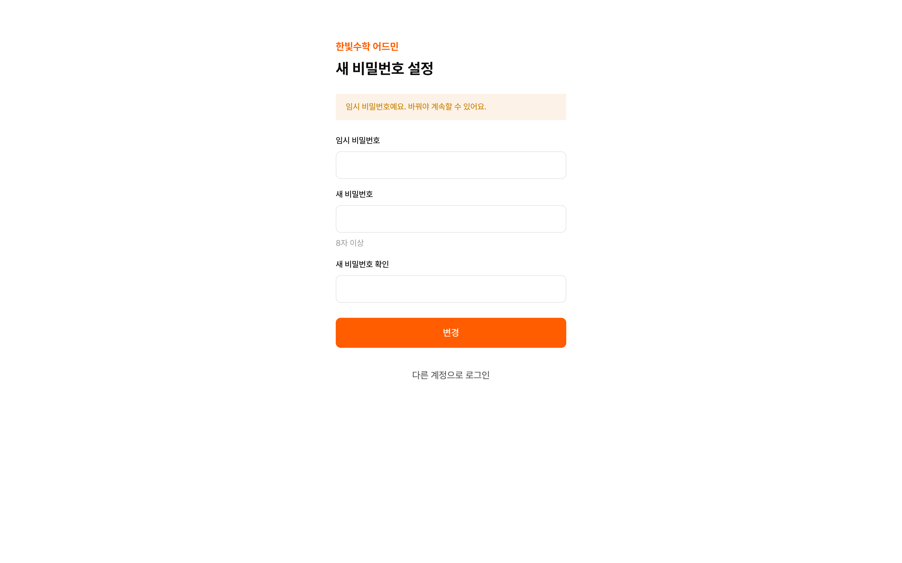
공통8임시 비밀번호 → 변경 강제 — 바꾸기 전에는 다른 화면 사용 불가
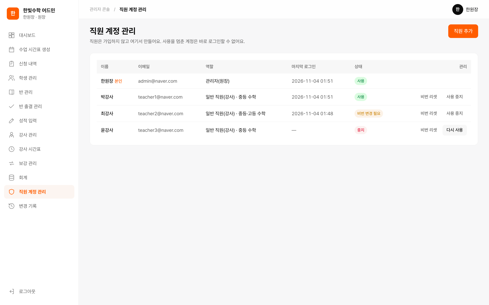
공통5·6직원 계정 — 가입 없음, 원장이 만들고 역할 지정
03 · 웹앱
주요 화면
학부모 · 코어 웹
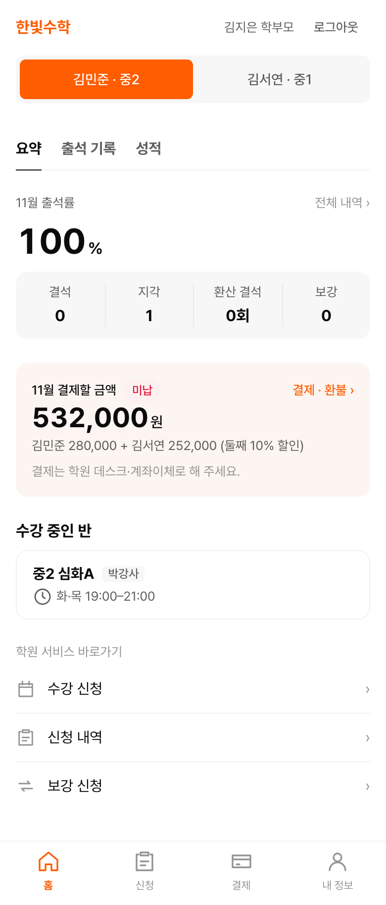
D19자녀 요약
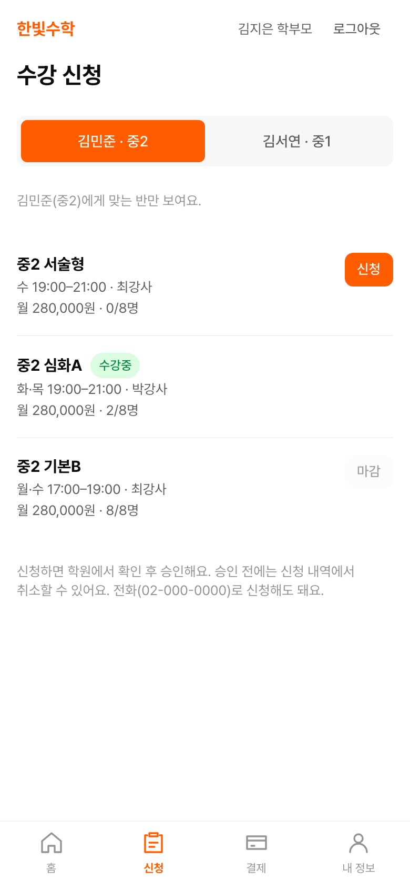
B6~8수강 신청 — 불가 이유 표시
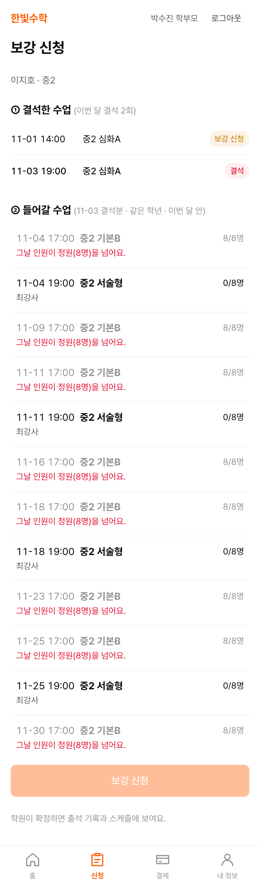
B11보강 신청
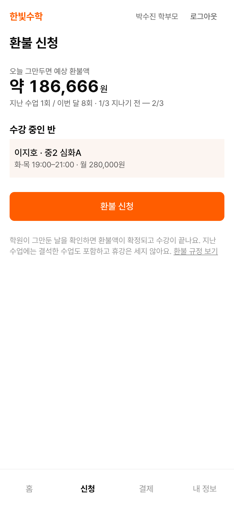
D20환불 신청
원장·강사 · 어드민
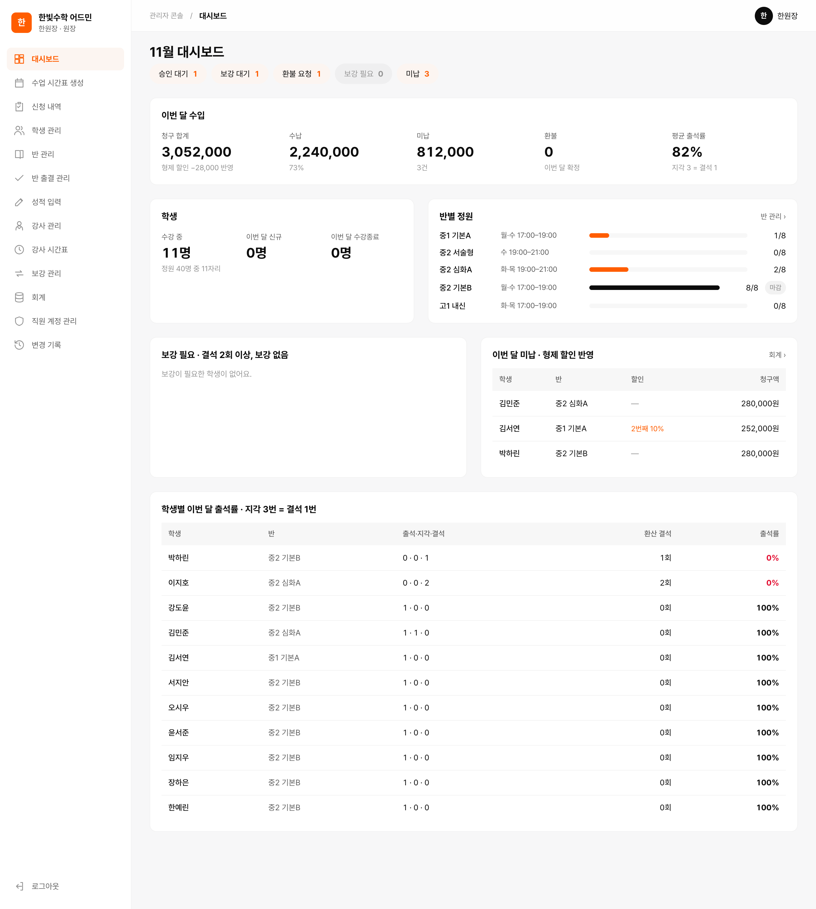
C13~15대시보드
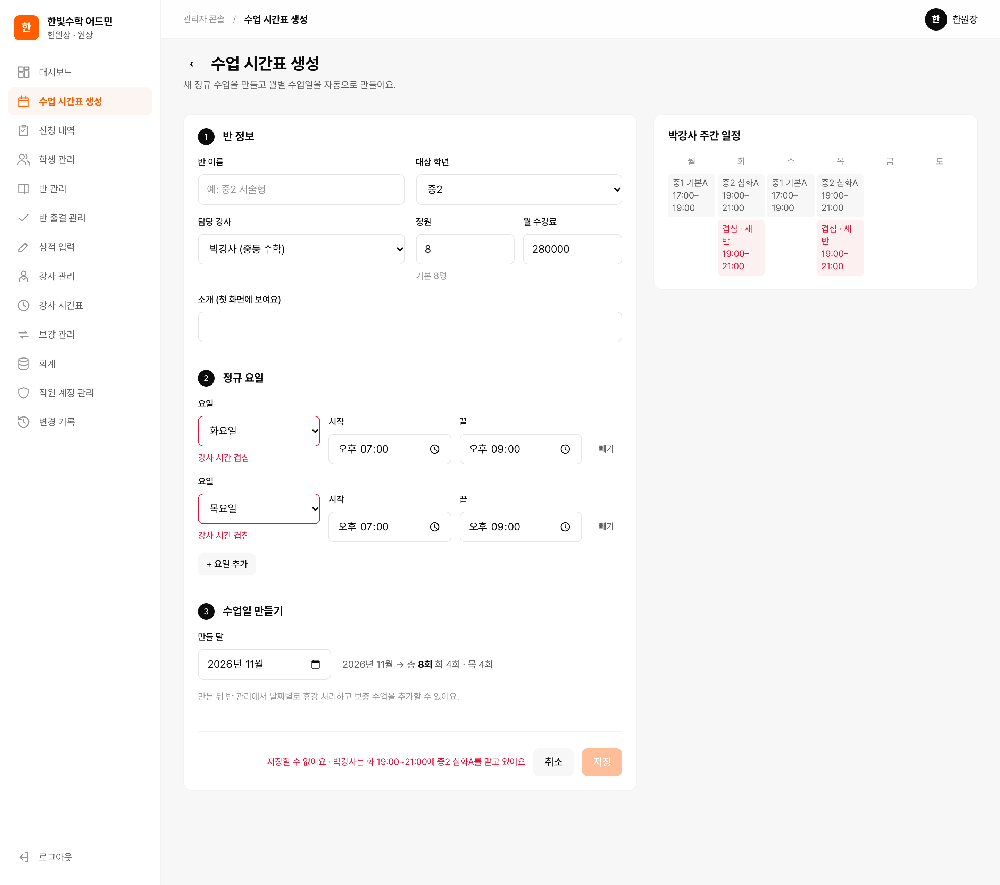
B9시간표 — 강사 겹침 표시
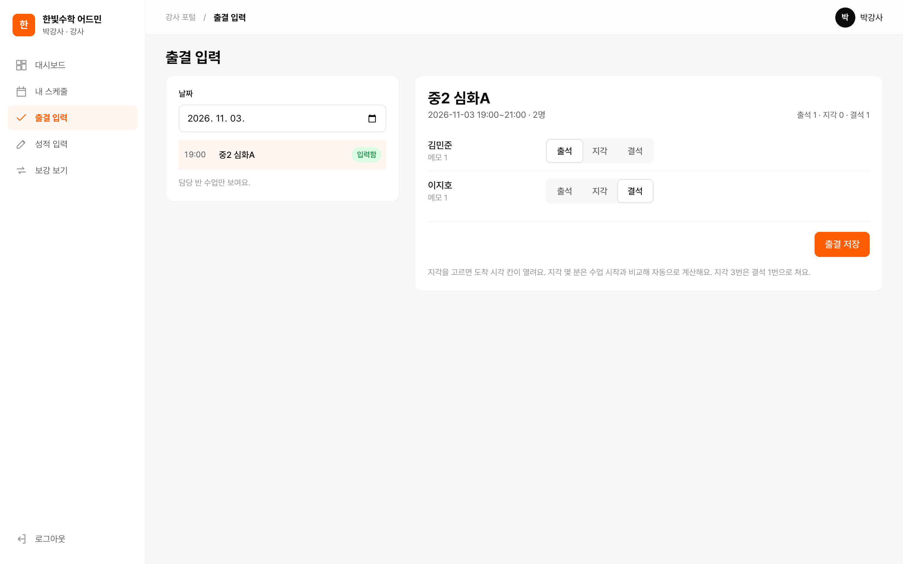
B10출결 — 지각은 도착 시각
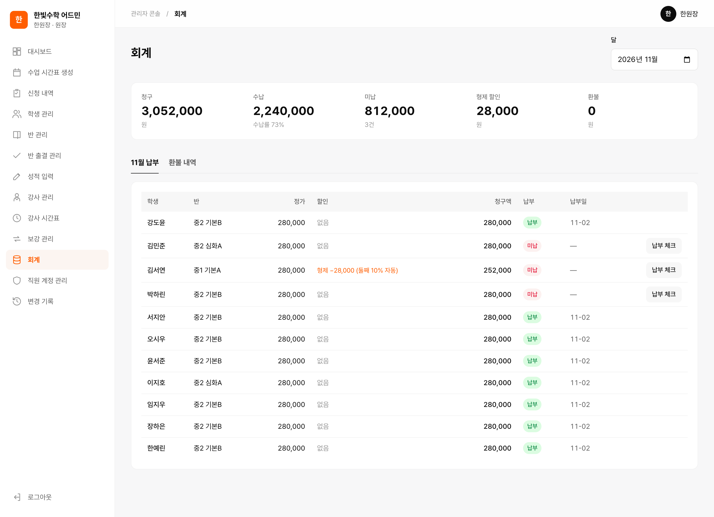
B12·C15회계 — 납부·형제 할인·미납
03 · 검증
규칙을 일부러 어겨 본 백엔드 응답
실제 응답 문구 · captures/40-api-rejections.png
| 요구 | 한 일 | 응답 | 거절 문구 |
|---|---|---|---|
| 공통4 | 학부모가 다른 가족 자녀 출석 보기 | 403 | 우리 가족 자녀만 볼 수 있어요. |
| 공통7 | 사용 중지된 강사 로그인 | 401 | 사용이 중지된 계정이에요. 원장님께 문의하세요. |
| 공통8 | 임시 비밀번호 상태로 다른 API 호출 | 403 | 임시 비밀번호예요. 비밀번호를 바꿔야 계속할 수 있어요. |
| B6 | 다니는 반에 또 신청 | 400 | 신청할 수 없어요. 이미 신청했거나 다니고 있는 반이에요 |
| B7 | 정원 찬 반(8/8)에 신청 | 400 | 신청할 수 없어요. 정원(8명)이 찼어요 |
| B8 | 중2 학생이 중1 반에 신청 | 400 | 신청할 수 없어요. 중1 반이에요 (학생은 중2) |
| B9 | 박강사가 맡은 화 19~21시에 새 반 | 409 | 저장할 수 없어요. 박강사는 화 19:00~21:00에 중2 심화A를 맡고 있어요. |
| B11 | 그날 인원이 정원인 수업으로 보강 신청 | 400 | 보강을 신청할 수 없어요. 그날 인원이 정원(8명)을 넘어요. |
166QA 테스트케이스
28 → 26버그 발견 → 수정 · 1건 닫음 · 낮음 1건 남음
69백엔드 자동 테스트 통과
03 · 검증
웹앱을 거치지 않아도 DB가 거절
DBeaver에서 직접 INSERT · BEGIN … ROLLBACK
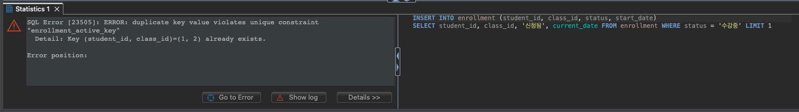
B6같은 반 중복 수강 — enrollment_active_key 부분 UQ
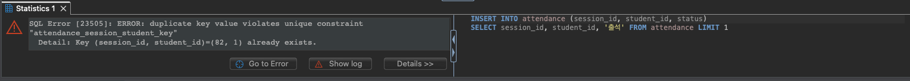
B10출결 두 줄 — attendance_session_student_key UQ
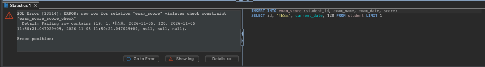
D16점수 120점 — exam_score_score_check CHECK
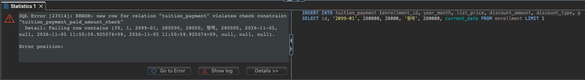
결정40낸 금액 ≠ 정가 − 할인 — tuition_payment_paid_amount_check
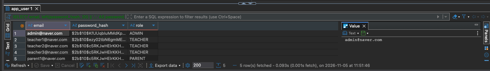
공통2 비밀번호는 해시로만
bcrypt $2b$10$… — 직원도 원래 비밀번호를 알 수 없음
04 · 선택 · Dify
문의 챗봇 — 질문은 백엔드를 거쳐 Dify로
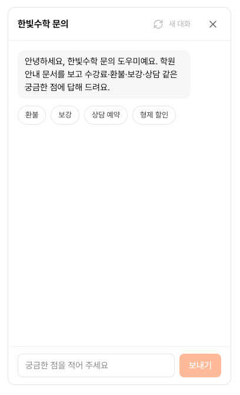
예시 질문 버튼
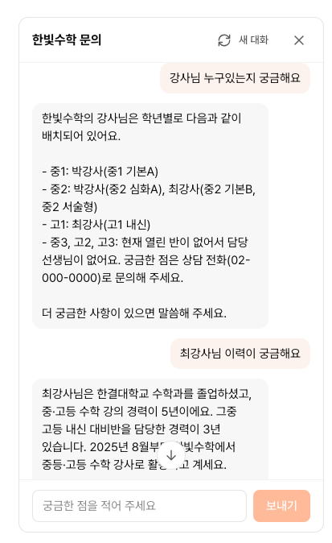
학원 안내 문서 기반 답변
코어 웹
플로팅 "문의하기"
백엔드 POST /chat/messages
키 보관 · 제한 · 기록
Dify chat-messages
학원 안내 10개 문서 합본 · 조 단위 청크 · 하이브리드 검색 Top K 4
백엔드를 거친 이유
- API 키는 백엔드에만 — 개발자 도구로도 노출되지 않음
- 질문 500자 · 1분 10회 제한
- 사용자별 대화 분리, Dify 응답에서 필요한 값만 골라 전달
- 대화는 chat_log에 저장 — 원장이 어드민 "문의 기록"에서 확인
04 · 선택 · 문제와 해결
API 키를 바꿀 때 임베딩 설정을 놓침
01
API 키 만료
처음 넣은 GPT API 키 만료 → 새 키로 교체
02
임베딩 쪽 키를 놓침
모델은 그대로, 임베딩 설정의 키는 교체 누락 → 오류
03
설정 문제로 의심
임베딩·검색 설정 문제로 보고 검색 임계치부터 조정
04
원인 찾아 해결
임베딩 키 교체 후 지식 다시 임베딩
결과
- 기본 질문은 잘 답함 — 검색 설정은 그대로 유지
- 딱딱했던 첫 프롬프트만 수정 — 말투·답변 범위
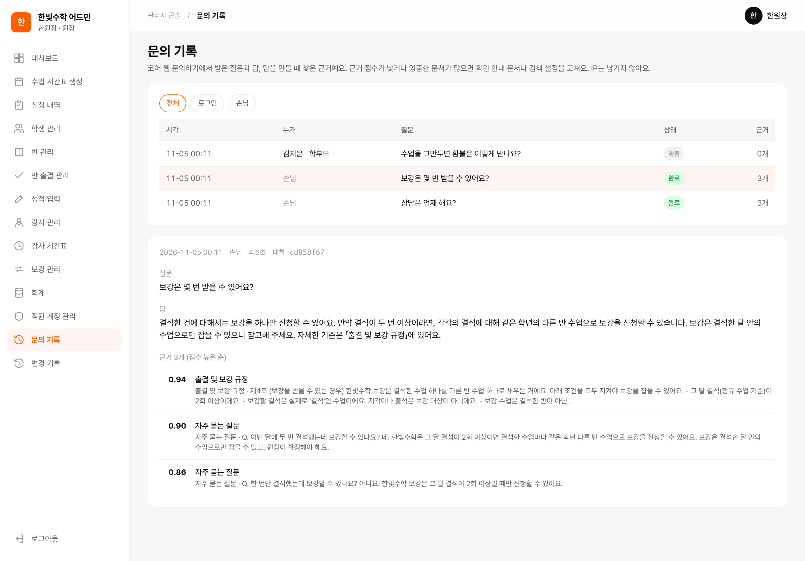
어드민 "문의 기록" — 질문마다 찾은 근거와 점수 (원장만)
05 · 배운 점
다시 한다면 바꿀 것
| 바꿀 것 | 이유 |
|---|---|
| 지각 3회 = 결석 1회를 반마다 세기 | 요구사항을 잘못 이해해 모든 수업을 합쳐 셈 — 같은 반 기준으로 세야 했음 |
| 챗봇 지식을 처음부터 DB에서 만들게 설계 | 지금은 강사·반 정보가 바뀌면 md를 고쳐 다시 올림 |
| API 키를 바꿀 때 임베딩 설정까지 확인하는 체크리스트 | 키 교체 때 임베딩 쪽을 놓쳐 오류 발생 |
05 · 배운 점
아쉬운 점과 다음에 할 것
아쉬운 점
챗봇 지식을 손으로 관리
강사·반 정보를 md로 고치고 Dify에 다시 올림
화면 이동·메뉴 구조
원하는 기능까지 찾아가기 불편
일부 화면 로딩이 느림
원인 후보: Render 무료 서버 잠듦 · 쿼리 · 인덱스 · 네트워크 (아직 측정 전)
다음에 할 것
DB → 챗봇 지식 자동 반영
강사·반 수정이 챗봇에 바로 반영
느린 원인부터 측정한 뒤 개선
원인별로 인덱스·쿼리·프런트 개선
가입 알림 · 학생 계정 이메일 안내
신규 가입 Slack 알림, 학생은 이메일로 비밀번호 직접 설정
고객이 원하면 SNS 로그인
이번 요구사항은 "소셜 로그인 없음"이라 제외
사용자 웹을 불러오고 있어요
Render 서버가 잠들어 있으면 첫 응답이 1분 가까이 걸려요
Render 서버가 잠들어 있으면 첫 응답이 1분 가까이 걸려요
화면 안을 누르면 키보드 이동이 멈춰요 · 위 버튼으로 이동해요
어드민 웹을 불러오고 있어요
Render 서버가 잠들어 있으면 첫 응답이 1분 가까이 걸려요
Render 서버가 잠들어 있으면 첫 응답이 1분 가까이 걸려요
화면 안을 누르면 키보드 이동이 멈춰요 · 위 버튼으로 이동해요
THANK YOU
감사합니다
QR을 찍으면 바로 열려요
코어 웹
academy-enrollment-web.vercel.app
어드민
academy-enrollment-admin.vercel.app
코어 웹학생
student1@naver.com
내 스케줄·출석·성적 보기
코어 웹학부모
parent1@naver.com
자녀 요약·수강 신청·보강·결제
어드민강사
teacher1@naver.com
담당 반 출결·성적 입력
어드민원장
admin@naver.com
전체 메뉴 — 승인·회계·직원 계정
비밀번호는 발표 중에 안내해요 · 데모 데이터라 발표 뒤에는 계정이 바뀌거나 멈출 수 있어요